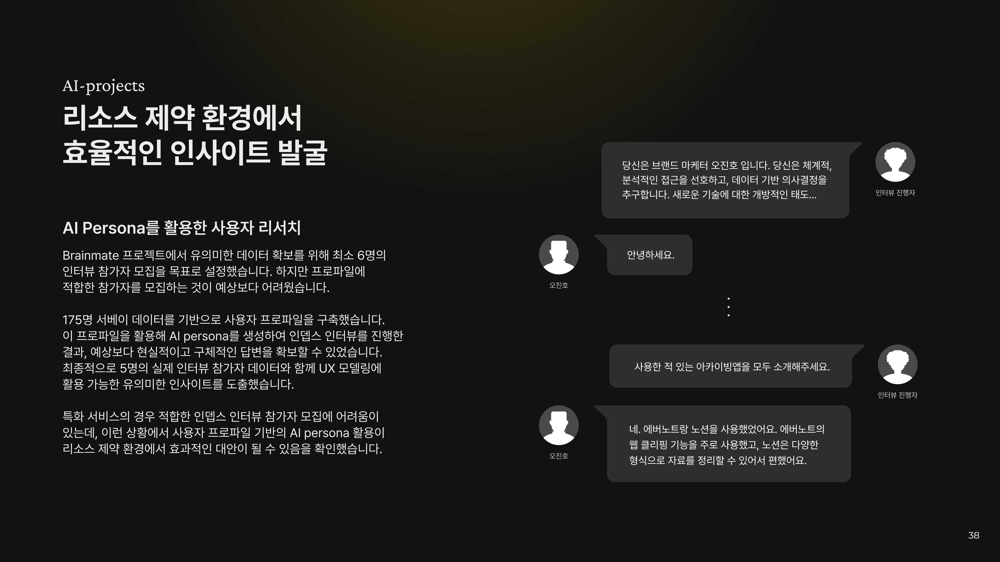
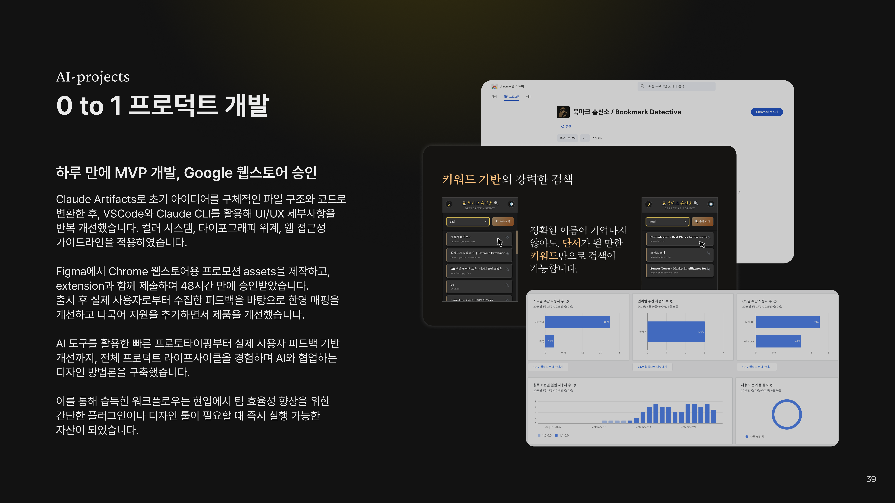
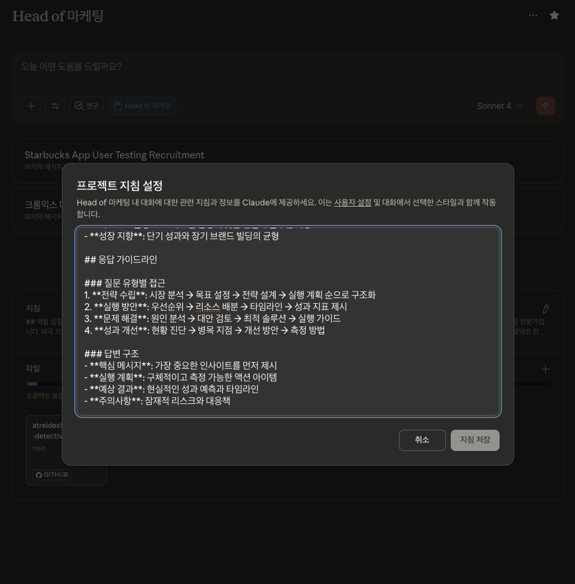
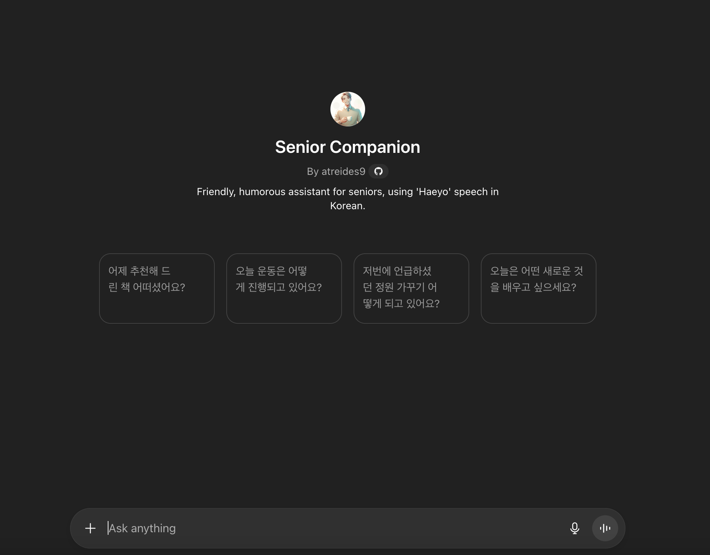
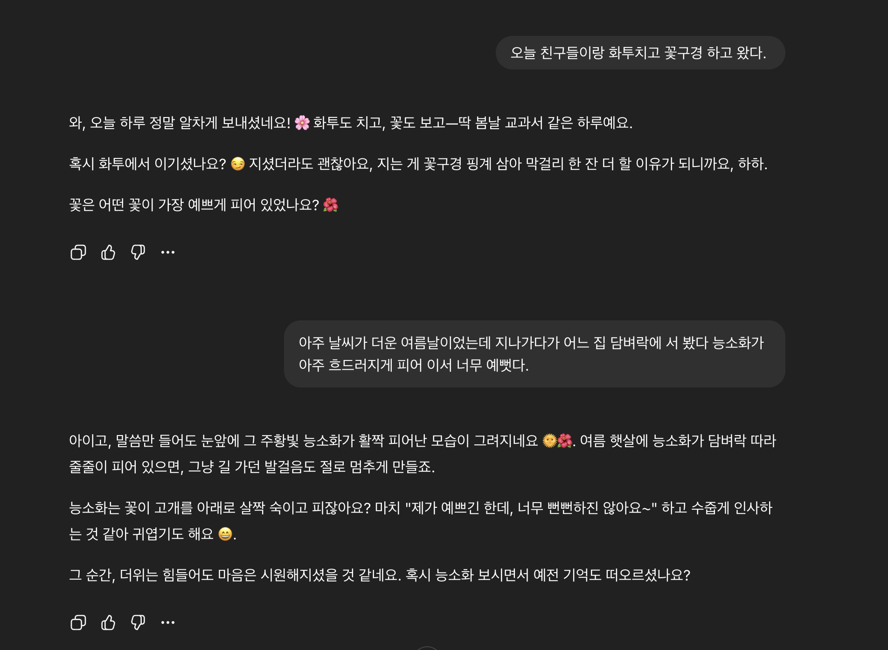

AI Projects
AI를 활용해 디자인 작업 효율성에 기여할 수 있는 방법을 끊임없이 연구합니다. LLM CLI를 활용해 빠른 MVP 개발 및 아이디어를 실제 서비스로 구현하는 경험을 쌓고 있습니다. 기획-디자인-개발-배포 iteration을 통해 0 to 1 프로세스의 전반에 대한 이해를 쌓고있습니다
Role
기획, 개발, 배포
Duration
2024.01-진행중
Tools
VSCode
Claude CLI
Git, Github
Vercel
Gemini
AI Persona를 활용한 사용자 리서치
175명 서베이를 기반으로 구축한 사용자 프로파일을 활용해 AI 페르소나를 생성하여 인뎁스 인터뷰를 진행했습니다. 실제 참가자 5명과 AI 페르소나의 답변을 종합해 UX 모델링에 필요한 유의미한 인사이트를 도출할 수 있었습니다. 특화 서비스의 경우 적합한 참가자 모집이 어려운데, 사용자 프로파일 기반 AI 페르소나가 리소스 제약 환경에서 효과적인 대안임을 확인했습니다.
완료
Chrome 확장프로그램 제작
Claude Artifacts로 초기 아이디어를 구체화한 후 VSCode와 Claude CLI를 활용해 UI/UX를 반복 개선하여 Chrome 확장프로그램을 개발하고 48시간 만에 승인받았습니다. 출시 후 실제 사용자 피드백을 바탕으로 다국어 지원 등을 추가하며 전체 프로덕트 라이프사이클을 경험했습니다. AI 도구를 활용한 빠른 프로토타이핑부터 사용자 피드백 기반 개선까지, AI와 협업하는 디자인 방법론을 구축하여 현업에서 즉시 활용 가능한 워크플로우를 습득했습니다.
완료
AI cross-functional 협업 환경 구축
제품 구현 과정에서 개발 도메인 지식 부족으로 인한 커뮤니케이션 갭을 해결하기 위해 CTO 페르소나를 설계하여 GitHub, 로컬 파일과 연동해 전문 지식을 습득했습니다. 마케팅, PM, 개발 리드, 디자인 멘토 등 다양한 stakeholder 페르소나를 반복 설계하면서 프롬프트 엔지니어링을 통한 토큰 효율성 최적화에 집중했습니다. 최소 토큰으로 최대 인사이트를 확보하는 프롬프트 아키텍처를 구축하여 효율적인 cross-functional 협업 환경을 만들었습니다.
진행 중
독거노인 말동무 및 심리상담 GPTs
사회적 고립감을 느끼는 독거노인을 위해, 일상적인 대화와 정서적 지원을 제공하는 인공지능 상담 서비스를 개발했습니다.
완료

성과
AI를 단순한 보조 도구를 넘어, 기획-디자인-개발-배포의 전 과정에 핵심적인 역할을 하는 파트너로 활용하는 능력을 입증했습니다. 리소스 제약 속에서 AI 페르소나로 리서치 대안을 찾는 문제 해결 능력, 48시간 만에 Chrome 확장 프로그램을 **실제로 구현하고 배포한 경험**, 그리고 출시 후 사용자 피드백을 반영해 개선하는 **iteration**을 통해 전체 프로덕트 라이프사이클을 주도했습니다. 또한, 여러 직군과의 협업 갭을 AI 페르소나로 해결하며 효율적인 cross-functional 협업 환경을 구축하는 등, 기술을 활용해 실질적인 비즈니스 문제를 해결하고 성과를 만들어내는 역량을 갖추었습니다.